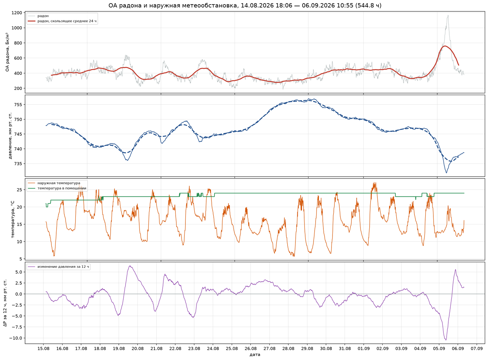
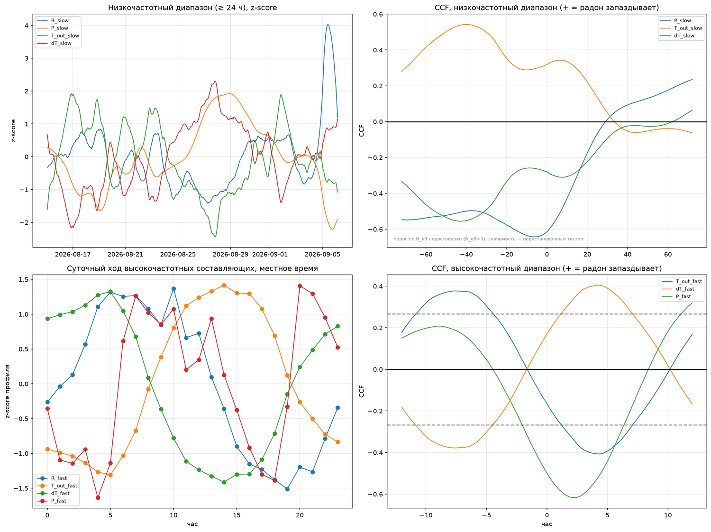
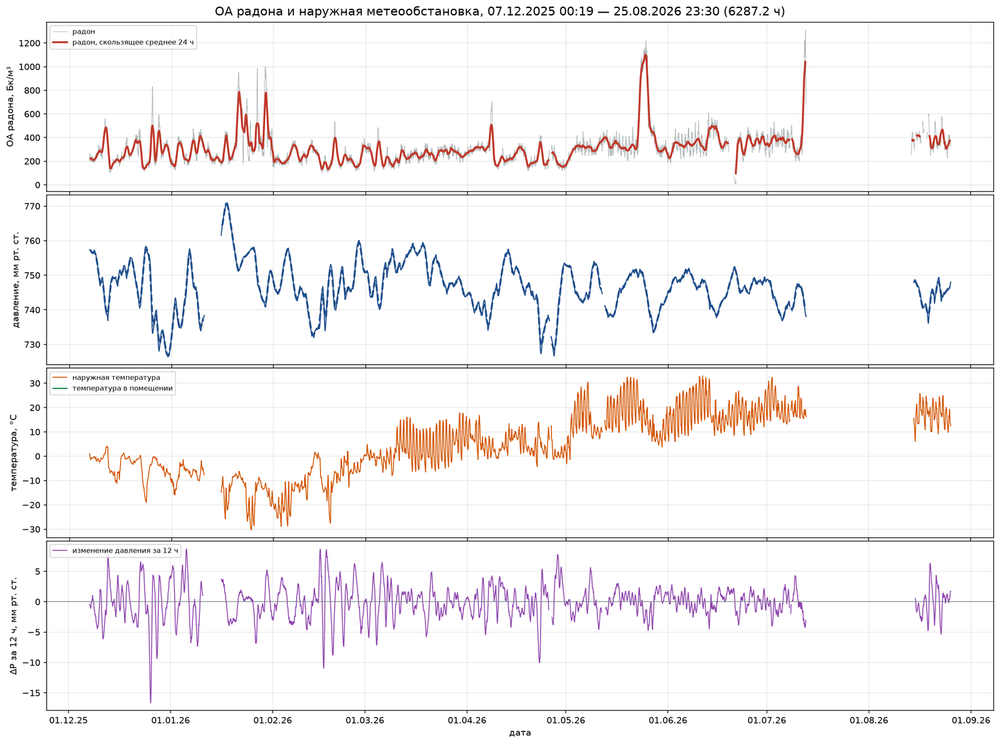
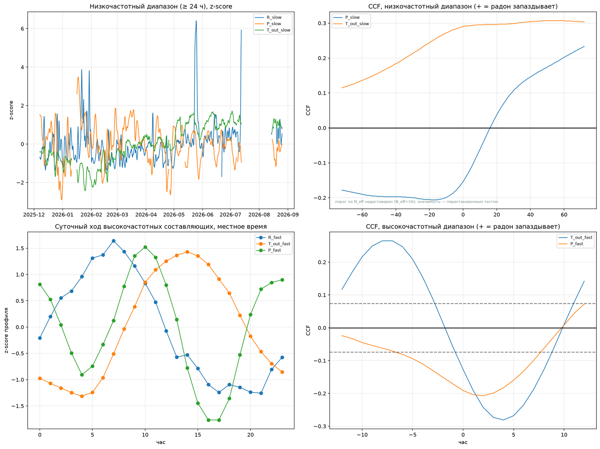

Объёмная активность радона в подвале жилого дома сопоставлена с показаниями наружной метеостанции за 23 суток и за 9 месяцев — двумя приборами, работавшими в одном и том же помещении. Изменчивость радона разделена на низкочастотную и высокочастотную составляющие, и связь с каждым метеофактором оценена на каждом масштабе отдельно.
Рассматривается отклик объёмной активности радона-222 в помещении на изменения наружной метеообстановки. Актуальность определяется тем, что при контроле радона результат единичного измерения зависит от погодных условий периода наблюдения, а величина и характерное время этой зависимости для конкретного здания обычно неизвестны. Цель работы — установить, какие метеорологические величины связаны с изменчивостью радона и на каких масштабах времени эта связь проявляется, разделив внутрисуточные и синоптические процессы.
Использованы непрерывные записи двух мониторов радона, работавших в одном подвале, и наружной метеостанции: период продолжительностью 545 часов с шагом 10 минут и период продолжительностью 6286 часов с шагом 1 час. Каждый ряд разложен на низкочастотную составляющую (скользящее среднее по окну 24 часа) и высокочастотную (остаток). Оценивались коэффициенты корреляции Пирсона и Спирмена, значимость определялась перестановочным тестом с циклическим сдвигом, поскольку у сглаженных рядов оценка эффективного объёма выборки по автокорреляции вырождается. Дополнительно рассчитаны взаимные корреляционные функции по запаздыванию, средний суточный ход и множественные регрессии с оценкой ошибок, устойчивой к автокорреляции. Повторное разложение с окном 30 суток использовано для отделения сезонной составляющей от синоптической.
Установлено, что наружная температура связана с радоном в высокочастотном диапазоне, знак связи отрицательный. Запаздывание, полученное по исходным рядам (около четырёх часов), после устранения суточной периодичности обоих рядов на коротком периоде не воспроизводится, а на длинных сокращается примерно до трёх часов, поэтому устойчивым результатом считается знак связи, а не величина запаздывания. Атмосферное давление действует на обоих масштабах, причём наиболее сильной и устойчивой оказывается связь не с уровнем давления, а с его изменением за предшествующие сутки. Скорость ветра значимой связи не показала. На сезонную составляющую приходится меньшая доля изменчивости, чем на синоптическую; связь месячных средних с наружной температурой положительна и значима (+3,8 ± 1,5 Бк/м³ на градус), однако при девяти месяцах наблюдения этот вывод следует считать пограничным. Все приведённые запаздывания являются верхними оценками: они содержат вклад собственной инерции прибора, оценённой по независимому эксперименту величиной не более часа. Преобладание скорости изменения давления над его уровнем согласуется с описанным в литературе представлением о диффузионном характере распространения возмущения давления в грунте, при котором разность давлений между подпольем и грунтом существует лишь в течение самого изменения; параметры грунта и расход почвенного газа в настоящей работе не измерялись, поэтому механизм проверке не подвергался. Практическое следствие для обследованных помещений состоит в том, что метеорологическим сопровождением измерений радона целесообразно считать ход давления за предшествующие сутки, а не только температуру наружного воздуха; распространение этого правила на другие объекты требует проверки.
Выводы получены в одном помещении и на общность не претендуют. Соотношение вкладов метеорологических факторов определяется проницаемостью подстилающего грунта, конструкцией подземной части здания и режимом его проветривания, поэтому приведённые коэффициенты и доли дисперсии следует рассматривать как характеристику обследованного подвала, а не как величины, переносимые на другие здания. Воспроизводимость проверена лишь в узком смысле — двумя приборами и на разных отрезках времени в одном и том же помещении.
Ключевые слова: радон-222; объёмная активность; непрерывный мониторинг; атмосферное давление; тенденция давления; наружная температура; суточный ход; масштабы изменчивости; взаимная корреляционная функция; запаздывание отклика; перестановочный тест; барометрическая подкачка.
Объёмная активность (ОА) радона в помещении не является постоянной величиной: она меняется в несколько раз в пределах суток и в пределах сезона при неизменном источнике поступления. Это свойство определяет всю практику контроля радона — нормирование ведётся по среднегодовым величинам, а результат короткого измерения сам по себе не характеризует помещение.
Причины изменчивости разделяются на две группы. Первая — режим эксплуатации помещения (проветривание, работа вытяжной вентиляции, присутствие людей). Вторая — наружные метеорологические условия, действующие на перенос почвенного воздуха в здание. Вторая группа представляет отдельный интерес: она не зависит от поведения жильцов, действует непрерывно и в принципе поддаётся учёту, если известны величины, с которыми связан отклик, и характерное время этого отклика.
Постановка задачи в настоящей работе основана на предположении, высказанном по результатам предшествующих наблюдений: температура наружного воздуха формирует короткие, внутрисуточные изменения ОА радона, тогда как атмосферное давление ответственно за низкочастотные изменения продолжительностью в несколько суток. Такое разделение поддаётся прямой проверке, если разложить каждый ряд на составляющие с разными характерными временами и оценивать связь на каждом масштабе отдельно — при анализе исходных рядов целиком отклики разных масштабов смешиваются, и вклад высокочастотных процессов маскируется низкочастотными, на которые приходится большая часть дисперсии.
Цель работы — определить, с какими наружными метеорологическими величинами связана изменчивость ОА радона в помещении и на каких масштабах времени эта связь проявляется. Задачи: разделить изменчивость радона и метеофакторов на низкочастотную и высокочастотную составляющие; оценить связь на каждом масштабе с корректным учётом автокорреляции; определить запаздывание отклика; проверить устойчивость результата на двух независимых наборах данных; убедиться в том, что применённая процедура способна как обнаруживать заложенную связь, так и не обнаруживать её в отсутствие.
Влажность наружного воздуха из рассмотрения исключена намеренно, и это решение требует уточнения. Относительная влажность находится в почти строгой противофазе с температурой (коэффициент корреляции высокочастотных составляющих от −0,88 до −0,91 по обоим периодам), поэтому совместное включение обеих величин перераспределяет их вклады между собой и затрудняет истолкование. К абсолютной влажности это рассуждение неприменимо: её связь с температурой в высокочастотном диапазоне составляет +0,35 (период А), +0,00 (период Б) и −0,11 (период Б′), то есть противофазы нет. Абсолютная влажность исключена вместе с относительной, отдельного обоснования это исключение не имеет. Поэтому все приводимые ниже суждения о сравнительной силе факторов относятся к рассмотренному набору, из которого влажность выведена, и не означают, что влажность несущественна.
Использованы четыре записи: две — ОА радона в одном и том же помещении (подвал жилого дома, прямой контакт с грунтом), полученные двумя разными приборами, и две — наружная метеостанция, расположенная в том же населённом пункте. Все ряды непрерывные, с собственными метками времени приборов.
| Обозначение | Монитор радона | Период | Часов | Шаг | Средняя ОА, Бк/м³ |
|---|---|---|---|---|---|
| Период А | RadonEye, подвал | 14.08 – 06.09.2026 | 545 | 10 мин | 401 |
| Период Б | RadonEye 2+, тот же подвал | 07.12.2025 – 25.08.2026 | 6286 | 1 ч | 309 |
| Период Б′ | тот же прибор, сокращённый период | 07.12.2025 – 07.07.2026 | 5112 | 1 ч | 303 |
Периоды А и Б получены в одном помещении разными приборами и в разное время. Период Б′ — сокращённый вариант периода Б, введённый для проверки устойчивости выводов.
Первая. В длинной метеозаписи столбец наружной температуры до 06.12.2025 содержит показания датчика, находившегося не на улице: с 23.11 по 05.12.2025 значения лежат в интервале 23,0–25,4 °C при относительной влажности 24–32 %, а наибольший суточный размах за весь отрезок составляет 1,8 °C (для сравнения: с марта 2026 года суток с таким размахом нет вовсе). Переход к наружным условиям происходит 06.12.2025, когда суточный минимум падает с 24,4 до 1,4 °C, а на следующие сутки составляет −1,5 °C при относительной влажности 84–93 %. Все расчёты по длинным периодам начинаются с 07.12.2025. В том же ряду обнаружено единичное значение давления 656,52 мм рт. ст. (23.11.2025, 01:00 местного времени; в исходном файле метка соответствует 22.11.2025, 22:00 UTC), лежащее вне физически правдоподобного интервала для равнинной местности.
Вторая. Прибор периода Б периодически выносился из подвала в другое помещение. Это известно от владельца оборудования и подтверждается данными: с 26.08 по 03.09.2026 его показания составляют 17–39 Бк/м³, тогда как второй прибор, остававшийся в подвале, в те же сутки показывает 290–450 Бк/м³. Все такие сутки (девять из 252, менее 4 % ряда) исключены — период Б заканчивается 25.08.2026.
Кроме того, с 12.07 по 13.08.2026 запись не велась: помещение не эксплуатировалось (отпуск владельца). Этот промежуток — отсутствие данных, а не аномальные показания. Период Б′ обрезан по 08.07.2026 (последний отсчёт — 07.07.2026) и не содержит ни исключённых суток, ни этого разрыва; совпадение результатов по периодам Б и Б′ показывает, что выводы от них не зависят.
Исключение суток, когда прибор был вне подвала, сказалось на выводах неодинаково: связи в высокочастотном диапазоне изменились в третьем знаке, тогда как вывод о сезонной связи изменился качественно (раздел 5) — выброшенные сутки приходились на конец августа и занижали месячное среднее самого тёплого участка ряда.
С 14 по 25 августа 2026 года оба прибора работали в подвале одновременно. Их суточные средние за эти двенадцать суток отличаются не более чем на 7 %: отношение показаний лежит в пределах 0,95–1,07 при уровнях 289–477 Бк/м³. Это позволяет сопоставлять периоды А и Б между собой, несмотря на разные приборы, и одновременно служит проверкой того, что наблюдаемые изменения не являются особенностью одного экземпляра.
Та же пара показаний позволяет однозначно распознать сутки, когда один из приборов выносили: отношение возрастает до 10–26.
Метки времени радона и метеостанции приводились к единой шкале: записи с целочисленными отметками времени приведены к всемирному координированному времени, суточный ход рассчитывался в местном времени (UTC+3). Значения приводились на равномерную сетку линейной интерполяцией, при этом точки сетки, удалённые более чем на 90 минут от ближайшего действительного отсчёта, исключались из анализа — интерполяция через длительный разрыв создаёт значения, которых прибор не измерял.
Каждый ряд представлялся суммой двух составляющих. Низкочастотная составляющая — центрированное скользящее среднее по окну 24 часа; высокочастотная — разность исходного ряда и низкочастотной составляющей. Такое разделение отсекает суточную периодичность: всё, что повторяется с периодом сутки и короче, попадает в высокочастотную составляющую, а синоптические и сезонные изменения — в низкочастотную. Связь радона с каждым метеофактором оценивалась внутри каждого масштаба, то есть низкочастотная составляющая радона сопоставлялась с низкочастотной составляющей фактора, высокочастотная — с высокочастотной.
Рассчитывались коэффициент корреляции Пирсона и ранговый коэффициент Спирмена. Прямое использование стандартного уровня значимости для рядов наблюдений некорректно: соседние отсчёты сильно зависимы, и число независимых наблюдений много меньше числа точек. Обычная поправка через эффективный объём выборки, рассчитанный по автокорреляции первого порядка, на сглаженных рядах вырождается — для низкочастотных составляющих она даёт от 3 до 15 эквивалентных независимых точек при нескольких тысячах отсчётов, и оценка значимости становится непригодной.
Поэтому значимость определялась перестановочным тестом с циклическим сдвигом: один из рядов многократно (2000 реализаций) сдвигался по времени на случайную величину, и наблюдаемый коэффициент корреляции сравнивался с распределением коэффициентов, полученных при сдвигах. Такая процедура сохраняет автокорреляционную структуру обоих рядов и разрушает только их взаимную привязку по времени. В таблицах приводится уровень значимости, полученный этим способом.
Запаздывание определялось по взаимной корреляционной функции. Принято соглашение о знаке: положительное запаздывание означает, что радон отстаёт от фактора. Для высокочастотных составляющих диапазон запаздывания ограничен ±12 часами: при ширине окна ±24 часа максимум функции попадает на противофазу суточного цикла и получает ложное истолкование.
Средний суточный ход рассчитывался осреднением высокочастотных составляющих по часу местного времени. Множественные регрессии строились на стандартизованных величинах с оценкой ошибок, устойчивой к автокорреляции и неоднородности дисперсии (метод Ньюи — Уэста, число учитываемых запаздываний соответствует суткам).

Основная часть изменчивости радона приходится на низкочастотную составляющую, однако суточный ход даёт заметный вклад: от одной десятой на длинном периоде до четверти на коротком.
| Величина | Медленная, период А | Быстрая, период А | Медленная, период Б | Быстрая, период Б |
|---|---|---|---|---|
| ОА радона | 58,1 % | 27,8 % | 78,4 % | 11,5 % |
| Атмосферное давление | 91,9 % | 1,9 % | 94,3 % | 0,8 % |
| Наружная температура | 24,0 % | 73,3 % | 91,5 % | 8,3 % |
Различие в распределении дисперсии наружной температуры между периодами объясняется составом периодов: короткий период занимает три недели августа, где температура меняется преимущественно в пределах суток, длинный охватывает переход от зимы к лету, где преобладает сезонный ход.
| Фактор | r, период А | p, период А | r, период Б | p, период Б | r, период Б′ | p, период Б′ |
|---|---|---|---|---|---|---|
| Атмосферное давление | −0,614 | 0,013 | −0,154 | 0,174 | −0,144 | 0,288 |
| Наружная температура | +0,319 | 0,222 | +0,290 | 0,235 | +0,272 | 0,255 |
| Скорость ветра | −0,259 | 0,301 | −0,112 | 0,312 | −0,124 | 0,255 |
| Температура в помещении | −0,035 | 0,979 | нет данных (формат выгрузки) | |||
На низкочастотном диапазоне устойчивой связи не обнаружено ни у одного фактора. Давление значимо только на трёхнедельном периоде А; на девятимесячном периоде значение оказывается пограничным, а после сокращения периода связь распадается. Наружная температура не значима ни в одном варианте. Такой результат согласуется с малым числом независимых наблюдений на этом масштабе: за 23 суток укладывается порядка двадцати независимых суточных интервалов, что недостаточно для уверенного разделения совпадения и связи.
| Фактор | r, период А | p, период А | r, период Б | p, период Б | r, период Б′ | p, период Б′ |
|---|---|---|---|---|---|---|
| Атмосферное давление | −0,499 | 0,012 | −0,191 | 0,0005 | −0,184 | 0,0005 |
| Наружная температура | −0,166 | 0,696 | −0,127 | 0,048 | −0,135 | 0,036 |
| Скорость ветра | +0,013 | 0,932 | −0,044 | 0,154 | −0,045 | 0,126 |
На высокочастотном диапазоне давление значимо во всех трёх вариантах. Наружная температура значима на длинных периодах; на коротком периоде парный коэффициент корреляции значимости не достигает, что объясняется меньшим числом суточных циклов (23 против примерно 210) — при этом в многофакторной оценке того же периода (раздел 4.7) вклад температуры оказывается значимым.
| Пара | Период А | Период Б | Период Б′ |
|---|---|---|---|
| Радон ↔ наружная температура | −0,407 при +4,3 ч | −0,281 при +4,0 ч | −0,271 при +4,0 ч |
| Радон ↔ атмосферное давление | −0,617 при +2,2 ч | −0,207 при +2,0 ч | −0,194 при +2,0 ч |
Величины запаздывания воспроизводятся на двух разных приборах, на периодах разной продолжительности и при разном шаге сетки (10 минут и 1 час). Содержательно это означает: повышение наружной температуры сопровождается понижением ОА радона примерно через четыре часа, понижение давления — повышением ОА примерно через два часа.
Обе величины имеют выраженный суточный ход, а взаимная корреляционная функция двух периодических сигналов даёт экстремум при сдвиге, равном разности их фаз, независимо от наличия причинной связи. Контрольная синусоида с максимумом в 14 часов, подставленная вместо температуры, воспроизводит «запаздывание» +4…+5 часов на всех трёх периодах. Поэтому расчёт повторён после вычитания среднего суточного профиля из обоих рядов, что устраняет детерминированную суточную составляющую и оставляет только несинхронные отклонения.
Результат для температуры. На периоде А связь после такой процедуры не сохраняется: экстремум смещается на +10,7 ч при коэффициенте +0,155, а коэффициент при нулевом сдвиге составляет −0,148 при p = 0,10. На длинных периодах остаточная связь сохраняется, но запаздывание оказывается равным +3 часам, а не четырём: экстремум −0,180 (период Б) и −0,179 (период Б′), коэффициент при нулевом сдвиге −0,095 (p = 0,038) и −0,089 (p = 0,058). Следовательно, значение «четыре часа», полученное по исходным рядам, преимущественно отражает разность фаз суточных профилей; собственно отклик радона на температуру на коротком периоде из данных не выделяется, а на длинных соответствует запаздыванию около трёх часов и является слабым.
Результат для давления. Связь устойчива к этой процедуре: после вычитания суточных профилей экстремумы составляют −0,686, −0,251 и −0,213 по трём периодам при запаздывании +2,2, +2,0 и +1,0 часа. Вывод о давлении суточным циклом не объясняется.
Измеренное запаздывание включает не только время отклика помещения, но и инерцию самого монитора радона: прибор усредняет показания за некоторый интервал, и его выходной ряд сдвинут относительно действительной ОА. Приборной документацией эта величина не нормируется, поэтому она оценена по независимому эксперименту, выполненному ранее в том же подвале.
В том эксперименте одновременно записывались ОА радона тем же типом монитора и скорость счёта энергокомпенсированного гамма-дозиметра, реагирующего на дочерние продукты радона. Дочерние продукты накапливаются с задержкой относительно радона, определяемой периодами полураспада 214Pb (26,8 мин) и 214Bi (19,9 мин), то есть характерное время накопления составляет порядка часа. Взаимная корреляционная функция этих двух рядов достигает максимума при запаздывании гамма-отклика на 70 минут (r = 0,85, 260 совместных точек с шагом 10 минут).
Наблюдаемые 70 минут не превышают ожидаемого времени накопления дочерних продуктов. Если бы монитор радона обладал значительной собственной инерцией, его показания были бы уже сдвинуты вперёд, и измеренное запаздывание гамма-отклика оказалось бы заметно меньше часа. Отсюда оценка: собственная инерция монитора не превышает примерно часа, и приведённые в таблице 5 запаздывания (1–2 часа для давления, 3–4 часа для температуры) содержат приборный вклад того же порядка, что и физический. Это означает, что истинные времена отклика помещения меньше измеренных, а приводимые величины следует понимать как верхние оценки. Разделить приборную и физическую составляющие по имеющимся данным нельзя: для этого нужен эксперимент со скачкообразным изменением ОА при известном её действительном ходе.

| Величина | Максимум, период А | Размах, период А | Максимум, период Б | Размах, период Б |
|---|---|---|---|---|
| ОА радона | 10 ч | 77 Бк/м³ | 7 ч | 32,8 Бк/м³ |
| Наружная температура | 14 ч | 9,9 °C | 14 ч | 7,6 °C |
| Атмосферное давление | 20 ч | 0,3 мм рт. ст. | 10 ч | 0,3 мм рт. ст. |
Максимум ОА радона приходится на утренние часы, минимум — на вечерние; максимум наружной температуры наступает в 14 часов. Разность фаз составляет от четырёх до семи часов. Совпадение этой разности с запаздыванием, полученным по взаимной корреляционной функции исходных рядов, независимым подтверждением не является: обе величины извлечены из одного и того же суточного цикла, и именно поэтому потребовалась проверка вычитанием суточных профилей (раздел 4.4).
Помимо самого давления рассматривалось его изменение за предшествующие 3, 12 и 24 часа. Эта величина оказалась наиболее сильно связанной с ОА радона из всех рассмотренных.
| Интервал | r, период А | p, период А | r, период Б | p, период Б | r, период Б′ | p, период Б′ |
|---|---|---|---|---|---|---|
| 3 часа | −0,233 | 0,351 | −0,201 | 0,007 | −0,198 | 0,012 |
| 12 часов | −0,640 | 0,020 | −0,321 | 0,003 | −0,312 | 0,005 |
| 24 часа | −0,775 | 0,004 | −0,368 | 0,001 | −0,362 | 0,002 |
Приведённые в таблице 7 значения p получены поправкой на эффективный объём выборки. Пересчёт тем же перестановочным тестом, что применялся в таблицах 3 и 4, даёт для интервалов 3, 12 и 24 часа: 0,053, 0,019 и 0,007 (период А); 0,004, 0,0025 и 0,0005 (период Б); 0,0045, 0,0025 и 0,0005 (период Б′). Выводы о значимости сохраняются, за исключением трёхчасового интервала на периоде А, который остаётся незначимым при обоих способах оценки.
Связь усиливается с расширением интервала, по которому вычисляется изменение давления. Это указывает на то, что отклик определяется не мгновенным значением давления, а его ходом за предшествующие часы. Наблюдаемый знак согласуется с представлением о конвективном (адвективном) переносе почвенного воздуха, при котором понижению атмосферного давления отвечает рост поступления радона из грунта в подполье и далее в помещение. Колебания барометрического давления упоминаются среди причин, порождающих градиент пневматического давления в почве и определяющих конвективный перенос почвенного газа [2, с. 38]. Механизм, объясняющий преобладание скорости изменения давления над его уровнем, рассмотрен в разделе 6.
| Модель | R² | Коэффициенты (β; p) |
|---|---|---|
| Период А, исходный ряд | 0,577 | ΔP₁₂ −0,552 (<0,0001) · давление −0,430 (<0,0001) · наружная температура −0,179 (0,003) |
| Период Б, исходный ряд | 0,160 | ΔP₁₂ −0,294 (<0,0001) · наружная температура +0,209 (0,0003) · давление −0,087 (0,064) |
| Период А, высокочастотный диапазон | 0,285 | давление −0,503 (0,0001) · наружная температура −0,200 (0,003) · ветер +0,063 (0,056) |
| Период Б, высокочастотный диапазон | 0,057 | давление −0,205 (<0,0001) · наружная температура −0,143 (<0,0001) · ветер −0,004 (0,822) |
| Период А, низкочастотный диапазон | 0,428 | давление −0,694 (0,025) · ветер −0,257 (0,054) · наружная температура −0,203 (0,459) |
На коротком периоде метеорологические величины объясняют более половины дисперсии ОА радона, на длинном — около одной седьмой. Различие ожидаемо: за девять месяцев на изменчивость радона накладываются сезонные изменения режима здания и состояния грунта, не описываемые текущими метеопараметрами.
Знак коэффициента при наружной температуре различается между исходным рядом периода Б (+0,116) и высокочастотной составляющей того же периода (−0,151). Противоречия здесь нет: это разные величины. На внутрисуточном масштабе рост температуры сопровождается снижением ОА радона, а на масштабе сезона более тёплому времени года соответствует более высокий средний уровень ОА в подвале. Именно поэтому анализ без разделения на масштабы даёт для температуры смешанный и плохо интерпретируемый результат.


Разделение с окном 24 часа относит сезонный ход в низкочастотную составляющую вместе с синоптическими процессами. Чтобы отделить их друг от друга, длинный период обработан повторно с окном сглаживания 30 суток: тогда низкочастотная составляющая содержит только сезонное изменение, а всё остальное уходит в высокочастотную.
| Масштаб | Доля дисперсии |
|---|---|
| Сезонный (периоды длиннее 30 суток) | 16 % |
| Синоптический (от суток до 30 суток) | ≈62 % |
| Внутрисуточный | 12 % |
Наибольшая доля изменчивости приходится на синоптический масштаб: смена погоды в пределах нескольких суток изменяет ОА радона сильнее, чем смена времени года. Сезонная и внутрисуточная составляющие сопоставимы между собой.
| Месяц | ОА радона, Бк/м³ | Наружная температура, °C | Часов данных |
|---|---|---|---|
| Декабрь 2025 | 276 | −3,8 | 601 |
| Январь 2026 | 343 | −11,9 | 744 |
| Февраль 2026 | 233 | −10,5 | 672 |
| Март 2026 | 251 | +3,3 | 744 |
| Апрель 2026 | 249 | +4,7 | 705 |
| Май 2026 | 388 | +15,4 | 744 |
| Июнь 2026 | 352 | +18,1 | 676 |
| Июль 2026 | 408 | +19,9 | 279 |
| Август 2026 (по 25-е) | 386 | +17,1 | 241 |
Связь месячных средних ОА радона с месячной наружной температурой положительная и статистически значимая: r = +0,69 при p = 0,040 (девять месяцев), коэффициент линейной регрессии +3,8 ± 1,5 Бк/м³ на градус (p = 0,040). Средняя ОА тёплых месяцев (наружная температура выше +5 °C) превышает среднюю ОА холодных на 113 Бк/м³ — 384 против 270 (p = 0,002).
Этот результат появился только после исключения суток, в течение которых прибор находился вне подвала (см. раздел 2): при их учёте август занижался до 252 Бк/м³ вместо 386, и связь не достигала значимости (r = +0,49 при p = 0,18). Случай показателен: девять суток из 252 — менее четырёх процентов ряда — меняли вывод о наличии сезонной связи на противоположный.
Направление связи заслуживает отдельного упоминания. Для жилых этажей обычно ожидается зимний максимум, обусловленный тягой при большой разности температур. Здесь наблюдается обратное: более тёплым месяцам соответствует более высокая ОА. Для подвала это объяснимо: зимой разность температур велика, тяга выносит воздух из подвала наружу и замещает его наружным, летом же этот механизм ослабевает. Свой вклад может вносить и сезонное изменение режима проветривания, который не документировался, поэтому отделить температурный механизм от режимного по имеющимся данным нельзя. Февральское значение (233 Бк/м³ при −10,5 °C) нарушает монотонность, показывая, что сезонная составляющая накладывается на более сильную синоптическую.
Девять месяцев наблюдения дают порядка девяти независимых значений, полного годового цикла ряд не содержит, поэтому амплитуда сезонной волны по этим данным не определяется, а уровень значимости p = 0,04 при девяти точках следует считать пограничным. Приведённые величины — оценка порядка, а не измеренный сезонный ход.
Полученный результат — связь ОА радона с изменением давления сильнее, чем с его уровнем — имеет объяснение, изложенное в литературе, и оно же объясняет, почему связь с уровнем давления может отсутствовать вовсе.
Перенос почвенного газа в подземную часть здания описывается законом Дарси: удельный расход пропорционален градиенту давления в поровом пространстве и воздухопроницаемости грунта. Поток существует лишь при наличии градиента, поэтому вопрос о том, какая метеорологическая величина управляет поступлением радона, сводится к вопросу о том, чем создаётся и как долго удерживается разность давлений между подпольем и грунтом.
Поровое пространство грунта заполнено сжимаемым газом, а сам грунт обладает конечной воздухопроницаемостью. Вследствие этого изменение давления на верхней границе не передаётся в толщу мгновенно: поле порового давления подчиняется уравнению параболического типа (раздел 6.2), и возмущение распространяется вглубь с конечной скоростью, ослабляясь по мере удаления от границы. Подполье, подсыпка из крупнообломочного материала и сообщающиеся с атмосферой трещины обладают проницаемостью на несколько порядков выше, чем ненарушенный грунт, и потому следуют за наружным давлением практически без запаздывания.
Различие в скорости отклика двух сред и создаёт градиент. При монотонном изменении наружного давления поровое давление в грунте отстаёт от давления в подполье, разность между ними отлична от нуля, и по закону Дарси идёт фильтрационный перенос почвенного газа, обогащённого радоном. При переходе к установившемуся состоянию, когда наружное давление принимает постоянное значение, поле порового давления релаксирует к равновесному за время порядка времени релаксации системы (раздел 6.2), разность давлений обращается в нуль, и фильтрационная составляющая переноса прекращается. Установившемуся состоянию отвечает нулевой поток при любом уровне давления — как при высоком, так и при низком.
Из сказанного следует, что величиной, определяющей фильтрационное поступление радона, является производная давления по времени, тогда как само давление входит в задачу лишь через коэффициент переноса (раздел 6.2), где оно определяет плотность и, следовательно, сжимаемость порового газа. Отмечаемое в ряде работ отсутствие статистической связи объёмной активности радона с уровнем атмосферного давления в такой постановке не свидетельствует об отсутствии барической зависимости: при малой изменчивости давления в период наблюдения фильтрационная составляющая мала независимо от того, какое значение давления установилось.
Поровое давление подчиняется уравнению диффузии [3, ур. 1]
∂p/∂t = Dp · ∂²p/∂z²,
где Dp = k · Pатм / (μ · ε)
здесь k — воздухопроницаемость грунта, м²; Pатм — среднее атмосферное давление, Па; μ — динамическая вязкость почвенного газа, Па·с; ε — газозаполненная пористость. Величина Dp имеет размерность коэффициента диффузии (м²/с) и определяет скорость распространения возмущения давления в толще грунта.
Отклик на произвольный ход давления получается свёрткой реакции на единичный скачок с производной давления по времени [3, ур. 4]:
p(z, t) = ∫ Pstep(z, t − θ) · [dP(θ)/dθ] dθ
Под интегралом стоит именно производная давления — это и есть формальное выражение того, что поток управляется скоростью изменения. Расход почвенного газа далее находится по закону Дарси. Характерное время отклика системы
τ = Lc² / Dp
где Lc — характерный размер задачи (в цитируемой работе принята глубина залегания водоупора). Для условий их стенда k = 3·10⁻¹¹ м², ε = 0,40, Pатм = 92 кПа, μ = 1,8·10⁻⁵ Па·с, что даёт Dp = 0,39 м²/с и при Lc = 8,5 м — τ ≈ 3 мин. Пересчёт по приведённым в работе входным величинам воспроизводит оба значения (0,383 м²/с и 3,1 мин), то есть формулы выше воспроизводимы, а не процитированы формально.
Из вида свёртки следует, что изменение давления большой амплитуды, происходящее медленно, может дать меньший расход, чем изменение малой амплитуды, происходящее быстро. Именно это и было измерено: в цитируемой работе колебания амплитудой около 10 Па с периодом около 20 минут оказались более существенной движущей силой поступления почвенного газа, чем полусуточная волна амплитудой около 100 Па и чем прохождение фронта, давшее рост на 1000 Па за 16 часов. Причина в том, что у колебаний малой амплитуды и высокой частоты производная давления больше, а грунт с характерным временем порядка минут успевает на них откликнуться. В терминах частотного отклика грунт действует как фильтр верхних частот: высокочастотные составляющие поля давления передаются в подсыпку, низкочастотные — подавляются.
Глубина, на которую проникает гармоническое колебание давления, следует из уравнения
диффузии как δ = √(2Dp/ω), где ω — круговая частота. Расчёт
по этой формуле для диапазона воздухопроницаемости, принятого в [4]
(k = 10⁻¹³…10⁻¹⁰ м², при ε = 0,30 и Pатм = 100 кПа),
приведён в таблице 12. Он показывает, что при высокой проницаемости суточная волна охватывает
десятки метров и грунт откликается почти синхронно, а при низкой — затухает на первых метрах,
и отклик оказывается запаздывающим и ослабленным.
| k, м² | Dp, м²/с | δ для 24 ч, м | δ для 2 ч, м | τ при Lc = 3 м, мин |
|---|---|---|---|---|
| 10⁻¹³ | 0,0019 | 7,1 | 2,1 | 81 |
| 10⁻¹² | 0,019 | 22,6 | 6,5 | 8,1 |
| 10⁻¹¹ | 0,19 | 71,4 | 20,6 | 0,8 |
| 10⁻¹⁰ | 1,85 | 225,7 | 65,1 | 0,08 |
Численное моделирование [4] для двух гармоник, отобранных разложением реальных барограмм (период 0,5 ч при амплитуде 50 Па и период 24 ч при амплитуде 250 Па), даёт следующие оценки: для однородного грунта барометрические колебания увеличивают поступление радона в подвал до 120 % от притока, вызванного постоянным разрежением 5 Па; при наличии трещины в плите и проницаемости 10⁻¹⁰ м² поступление на периоде 0,5 ч оказывается в 10 раз больше диффузионного. Там же показано, что фазовое запаздывание и ослабление амплитуды тем больше, чем ниже проницаемость и чем дальше рассматриваемая точка от места накачки.
Отдельный результат касается приповерхностного слоя. В аналитическом решении [5] отклик оказывается сосредоточен вблизи границы раздела между почвенным слоем и подстилающей породой: наибольшие амплитуды достигаются в первых сантиметрах ниже этой границы и экспоненциально затухают вглубь, тогда как в однородном полупространстве на той же глубине они пренебрежимо малы. Указывается также, что удельный расход и поверхностный поток радона отстают от давления на доли периода, отличные от половины периода, характерной для однородной среды. Полный текст этой работы не был доступен, поэтому конкретные значения фазового сдвига здесь не приводятся.
В отечественной литературе тот же механизм описан как «накачивающий» эффект, возникающий вследствие отставания импульса давления при его распространении в почву; там же приводится модель, в которой сопротивление грунта потоку воздуха рассматривается как величина, зависящая от скорости изменения давления, и отмечается, что такая модель даёт более высокие скорости поступления радона, чем модели с постоянным перепадом [8]. Наблюдательное следствие сформулировано ещё определённее: плотность потока радона с поверхности почв «испытывает колебания только при изменении метеорологических факторов и не зависит от их абсолютных величин», причём после того, как давление понизилось и установилось на новом уровне, поток вновь снижается [9].
Полевые наблюдения согласуются с изложенным. По измерениям [6] изменение давления на 1–2 % при прохождении атмосферных фронтов изменяет поток радона с поверхности почвы на 20–60 %, причём в зависимости именно от скорости изменения давления и его продолжительности. В обзорном издании [7] тот же механизм описан качественно: понижение давления вытягивает почвенный газ, повышая концентрацию радона в приповерхностных слоях, повышение давления загоняет в грунт атмосферный воздух и оттесняет радон вглубь.
Механизм, при котором падение давления вызывало бы десорбцию радона с поверхности зёрен грунта, в доступной литературе описания не имеет. В работах по моделированию переноса радона сорбция входит как равновесное распределение по фазам, управляемое влажностью; известен также температурный канал. Зависимость сорбции радона от порового давления в найденных источниках не рассматривается, поэтому такое объяснение приповерхностных эффектов в настоящей работе не привлекается.
Не найдено также работ, в которых объёмная активность радона в помещении связывалась бы непосредственно со скоростью изменения атмосферного давления как с предиктором: производная давления фигурирует в теоретических моделях и в измерениях расхода почвенного газа, тогда как прикладные модели внутренней ОА оперируют либо уровнем давления, либо перепадом между помещением и наружным воздухом. В этом смысле приведённый выше результат (раздел 4.6) восполняет пробел, но именно поэтому и требует независимого воспроизведения на других зданиях.
Прежде чем интерпретировать полученные коэффициенты, процедура проверена на данных с заранее известным результатом. На основе действительного метеоряда строились искусственные ряды «радона» с заданными свойствами, которые затем обрабатывались тем же кодом.
| Что заложено в искусственный ряд | Что получено |
|---|---|
| Низкочастотная связь только с давлением, знак отрицательный | r = −0,994 при p = 0,0005; ложной высокочастотной связи с температурой не возникло |
| Высокочастотная связь только с температурой, запаздывание +4 ч, знак отрицательный | экстремум −0,856 при запаздывании +4,0 ч; ложной низкочастотной связи с давлением не возникло |
| Связи нет (красный шум) | p = 0,395 и 0,317 — ложных обнаружений нет |
Дополнительно проверялась способность процедуры обнаруживать собственные неисправности. В код вносились две независимые точечные ошибки: изменение знака запаздывания и изменение знака коэффициента корреляции. Каждая из них приводила к отрицательному результату ровно одной проверки из шести при сохранении остальных пяти, а после восстановления кода все шесть проверок вновь давали положительный результат. Это подтверждает, что проверка чувствительна к тем дефектам, на обнаружение которых рассчитана, и не срабатывает на исправном коде.
Работа выполнена с использованием систем искусственного интеллекта. Языковая модель применялась для подготовки кода обработки данных по составленному техническому заданию, проведения расчётов, построения графиков и подготовки текста настоящей статьи. Отдельная локальная языковая модель использовалась для первичной генерации кода по спецификации; полученный код проверялся и исправлялся вручную — при первом прогоне в нём было обнаружено и устранено восемь дефектов, включая ошибку приведения меток времени, из-за которой метеоряд полностью исключался из расчёта. Поиск литературы по механизму (раздел 6) также выполнялся с привлечением языковых моделей, однако выходные данные всех приведённых работ затем проверены по реестру Crossref, а величины из источников [3] и [4] — сверены с полными текстами; сведения, проверить которые не удалось, помечены в списке литературы.
Постановка задачи, предоставление исходных данных измерений, формулировка проверяемого предположения и приёмка результата принадлежат оператору. Проверка применённой процедуры на искусственных рядах и внесение контрольных ошибок в код (раздел 7) выполнены до истолкования результатов. Ответственность за содержание работы несёт оператор.
Источники [3] и [4] прочитаны в полном тексте, приведённые из них величины сверены с оригиналом; выходные данные всех работ с DOI проверены через реестр Crossref. Там, где полный текст не был доступен, это указано в соответствующем пункте, и такие сведения в расчёты настоящей работы не входят.